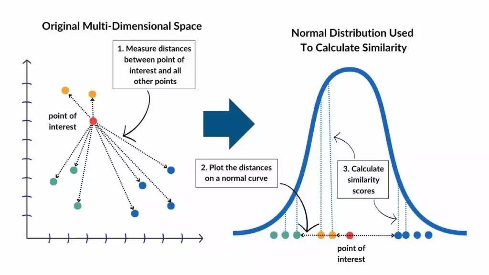
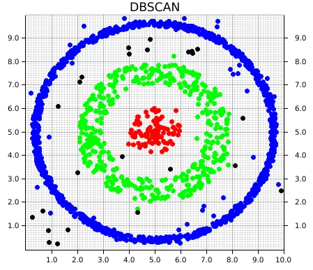

Unsupervised Learning:
Machine learning technique for working with unlabeled data sets. The algorithms find patterns or groupings without the need for human interaction, i.e. no previous data training required. Click on boxes below to learn more.
Dimensionality Reduction Methods
-
: Linear projection onto principal components.
PCA is a linear method that projects your data onto orthogonal axes (the principal components) ordered by variance. You can think of it as rotating and stretching your data cloud to lie on new axes that capture the most “spread.”
-
: Non-linear embedding for 2D/3D visualization.
In higher dimensions, measure similarity between data. Represent similarity as probabilities and repeats in lower dimensions.

Clustering Methods
-
: Partition into k clusters.
########

-
: Density-based cluster detection.
########

Image credit: Da Poian et al. 2023